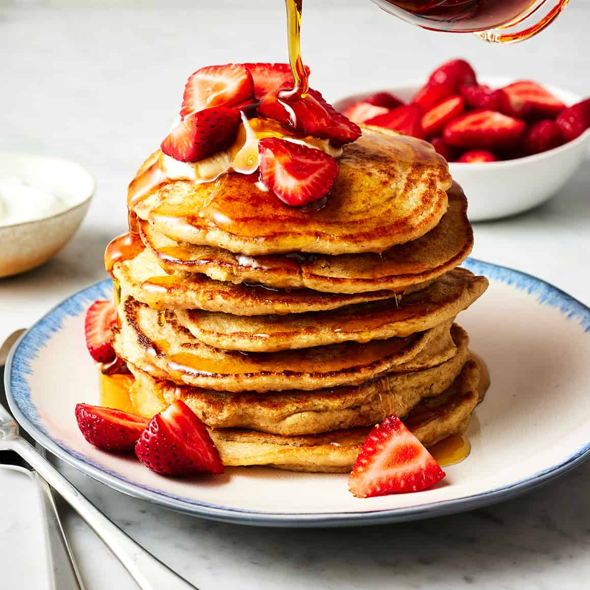

Home
Pancakes

Ingredients
1 cup all-purpose flour
2 tablespoons white sugar
2 teaspoons baking powder
½ teaspoon salt, or to taste
1 cup milk
2 tablespoons vegetable oil
1 large egg, beaten
Directions
1. Gather the ingredients.
2. Combine flour, sugar, baking powder, and salt in a large bowl; make a well in the center. Pour in milk, oil, and egg; mix until smooth.
3. Heat a lightly oiled griddle or frying pan over medium-high heat. Pour or scoop about ¼ cup batter per pancake onto the griddle; cook until bubbles form and the edges are dry, 1 to 2 minutes. Flip; cook until browned on the other side. Repeat with remaining batter.
4. Serve hot and enjoy!